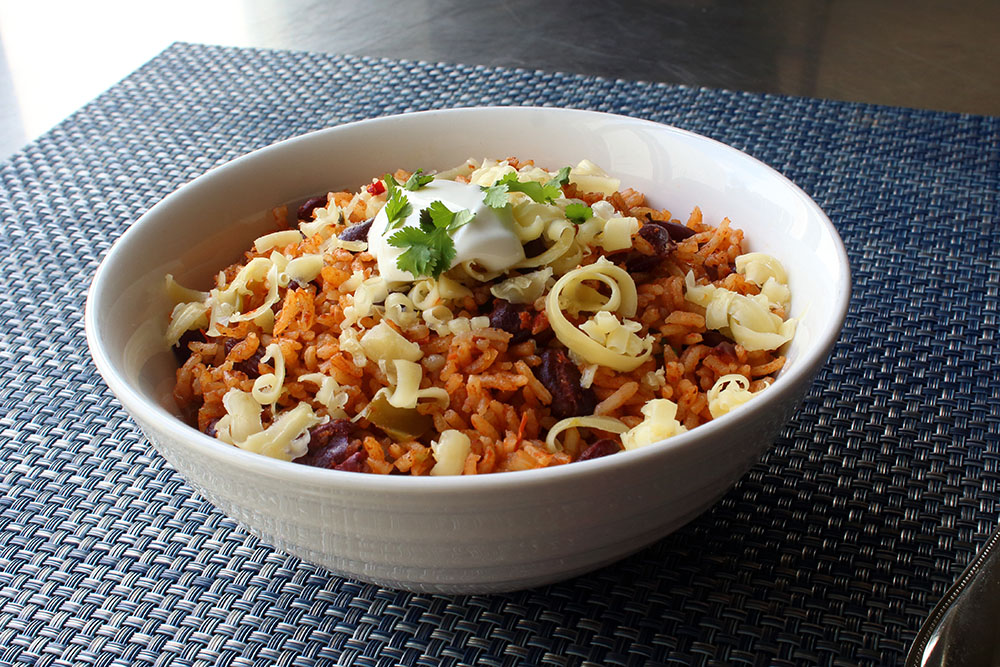

Homemade Pizza

Description
Pizza is an unbeatable family favorite that the kids will love, practically a special occasion in its own right.
So, what happens when you combine the fun of pizza with the healthier option of fresh ingredients assembled and baked in the comfort of your own home? Homemade Pizza!
Ingredients
- 3 packages of fresh pizza dough. (Our personal fave is Trader Joes)
- 1 pkg pepperoni
- 1 can Pineapple chunks
- 1 jar pizza sauce (refrigerated or shelf)
- 2 bags (16 oz) shredded mozzarella cheese
- 1 pkg of Canadian bacon
Directions
- Set the dough out to achieve room temperature roughly 2-3 hours prior to preparation
- Wipe down and clean a prep area for rolling out the pizza dough. Put down some flour to keep the dough from sticking.
- Roll out the pizza dough into a flat, rough crust. Place it on a circular pizza baking sheet
- Top the rolled out dough with pizza sauce, cheese, and whatever additional ingredients are desired. Top with a few extra sprinkles of cheese.
- Bake the pizza at 425 degrees F for 10-11 minutes. Remove promptly to cool and serve.
- Following the instructions above, prepare and bake additional pizzas with toppings included as desired.